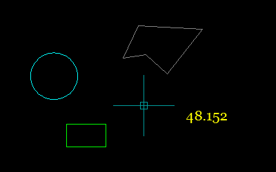

Field Objects
This page is delivered for consistency purposes only, as part of the LeeMac sample module of DynALisp, which shows how DynALisp turns existing AutoLISP programs into a module. The program and its description are the work of Lee Mac, who keeps all the credit for them. The original page, with the latest version, is on Lee Mac's website: https://lee-mac.com/fieldobjects.html
| Function Syntax | LM-FieldObjects – original syntax: fieldobjects (see aliases) |
| Current Version | 1.1 |
| Compatible with AutoCAD for Mac? | No |
| Compatible with AutoCAD LT? | Yes |
| Original Page | lee-mac.com/fieldobjects.html |
Program Description
This program enables the user to easily view the object or set of objects referenced by a selected field.
Upon issuing the command syntax fieldobjects at the AutoCAD command-line, the program will prompt the user to select an annotation object (Text, MText or Attribute) containing one or more field expressions referencing one or more objects in the active drawing. Such fields may be created using my Areas to Field program, or my Area Field to Attribute program, for example.
Following a valid selection, the program will enclose the selected annotation object containing the field(s) with a green rectangular text box, with links to every referenced object, each of which is surrounded by a red rectangular bounding box. The size of the rectangular frames relative to the enclosed objects is dependent on the current zoom level, and will automatically update as the user zooms & pans around the drawing area.
The diagrammatic display is retained until the user clicks the mouse or presses any key to exit the program.
Demonstration

Bundled program notes
;;--------------------=={ Display Field Objects }==--------------------;;
;; ;;
;; This program enables the user to easily view the object or set of ;;
;; objects referenced by a selected Field. ;;
;; ;;
;; Upon issuing the command syntax 'fieldobjects' at the AutoCAD ;;
;; command-line, the program will prompt the user to select an ;;
;; annotation object (Text, MText or Attribute) containing one or ;;
;; more field expressions referencing one or more objects in the ;;
;; active drawing. ;;
;; ;;
;; Following a valid selection, the program will enclose the selected ;;
;; annotation object containing the field(s) with a green rectangular ;;
;; text box, with links to every referenced object, each of which ;;
;; is surrounded by a red rectangular bounding box. The size of the ;;
;; rectangular frames relative to the enclosed objects is dependent ;;
;; on the current zoom level, and will automatically update as the ;;
;; user zooms & pans around the drawing area. ;;
;; ;;
;; The diagrammatic display is retained until the user clicks the ;;
;; mouse or presses any key to exit the program. ;;
;; ;;
;;----------------------------------------------------------------------;;
;; Author: Lee Mac, Copyright © 2011 - www.lee-mac.com ;;
;;----------------------------------------------------------------------;;
;; Version 1.0 - 2011-11-04 ;;
;; ;;
;; First release. ;;
;;----------------------------------------------------------------------;;
Command Names And Aliases
As in every DynALisp module, each program of this sample module has one main command, named LM-*, and the original command names of Lee Mac's page are kept as its aliases: they run the same command, and can be added, renamed or removed in Dyl-Suite (saved in Resources\Aliases.csv).
| Command | Aliases | Name |
|---|---|---|
| LM-FieldObjects | FIELDOBJECTS | Field Objects |